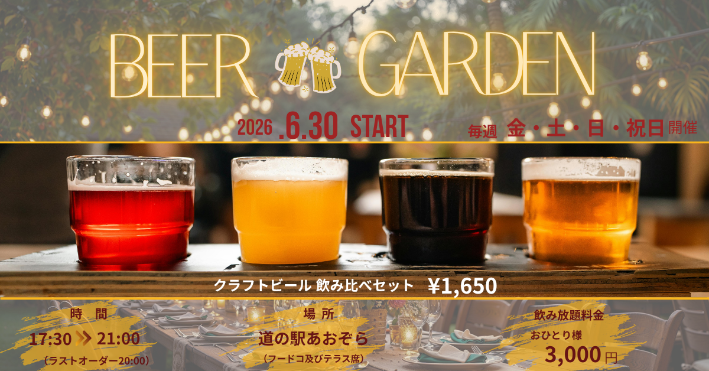

BEER GARDEN バナー制作

BEER GARDENバナー制作
制作目的
夏のビアガーデンイベントの開催を告知し、開催日時・場所・料金などの情報をわかりやすく
伝え、来場を促すバナーを制作しました。
ターゲット
ビールや食事を楽しみたい２０代～５０代の男女。
仕事帰りや友人・家族との食事を楽しみたい方を想定しています。
デザインの工夫
複数のクラフトビールを大きく配置し、ビアガーデンの楽しさや「飲み比べ」を
視覚的に表現しました。
背景には夜の野外空間を使用し、夏のイベントらしい雰囲気にを演出しています。
また、「6.30 START」「クラフトビール飲み比べセット¥1,650」など、特に伝え
たい情報を大きく配置。
開催日時・場所・飲み放題料金も下部に整理し、必要な情報をひと目で確認できる
構成にしました。
制作時間
40分
使用ツール
Canva